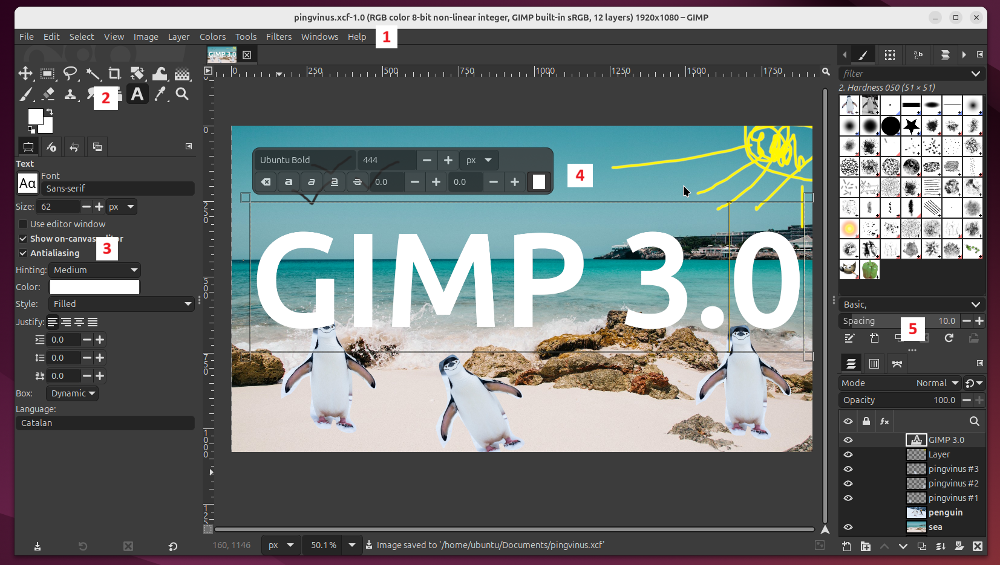
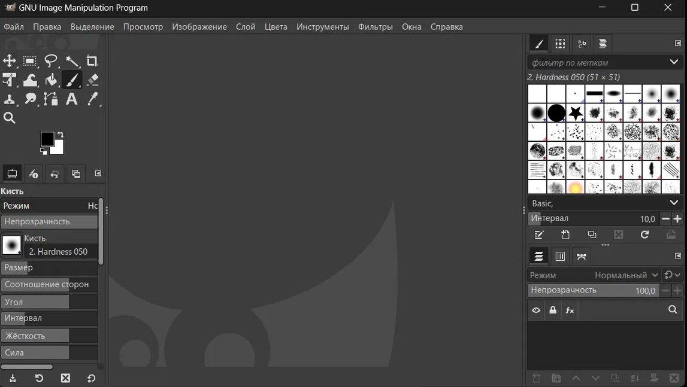
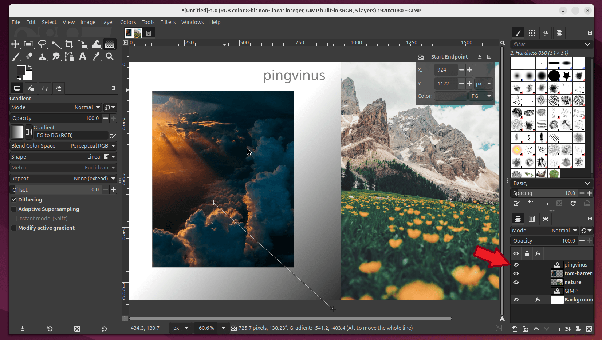
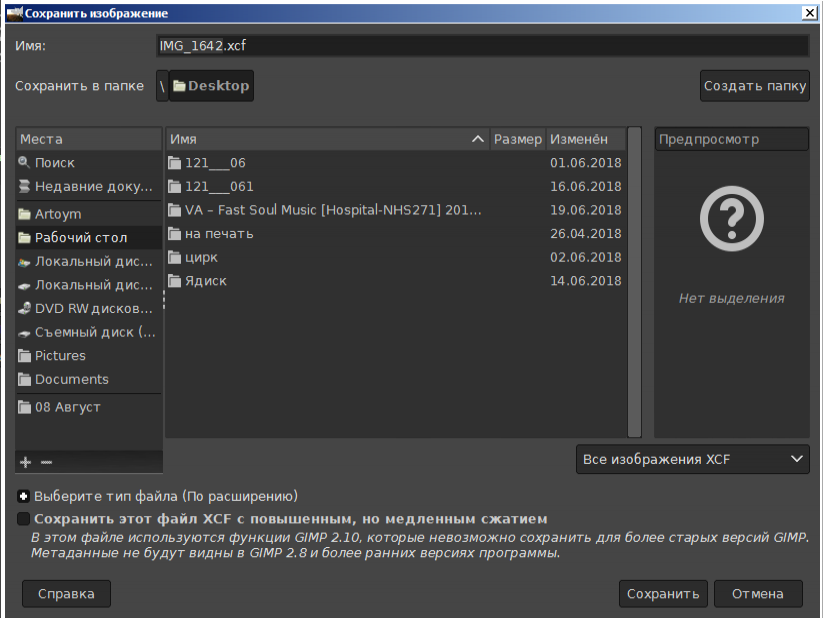

Переходим от простого редактирования изображений к более серьёзной работе с растровой графикой. Познакомимся с интерфейсом GIMP, его инструментами, слоями и правильным сохранением проекта.
GIMP — растровый графический редактор, предназначенный для создания и обработки цифровых изображений.
Возможности программы значительно шире простого рисования. GIMP можно использовать для обработки фотографий, создания графики, коллажей и подготовки изображений для дальнейшего использования.
На первый взгляд элементов значительно больше, чем в простом графическом редакторе. Но рабочее пространство можно разделить на несколько понятных областей.

Команды для работы с файлами, изображением, слоями, фильтрами и другими функциями.
Выделение, рисование, преобразование и другие операции.
Настройки меняются в зависимости от выбранного инструмента.
Центральная область, в которой отображается изображение.
Слои, кисти и другие вспомогательные диалоги.
У большинства инструментов GIMP есть собственные настройки. Например, для кисти можно менять размер, жёсткость и другие параметры.

Если работа начинается с чистого листа, создаётся новый документ.
Один из главных параметров — размер изображения.
Если нужно изменить уже существующую фотографию или рисунок, файл открывают в GIMP.
После открытия изображение появляется в центральной рабочей области.
На первом знакомстве необязательно запоминать каждую кнопку. Важнее понять, на какие группы можно разделить инструменты.
Позволяет указать область, с которой мы хотим работать.
Используется для создания линий, цвета и рисованных элементов.
Изменяет положение или геометрию изображения.
Позволяет оставить нужную часть изображения и убрать лишнее.
В панели инструментов отображаются два выбранных цвета. Они используются различными инструментами рисования и обработки.
Одна из важнейших идей GIMP — возможность разделить изображение на несколько независимых слоёв.
На одном находится фон, на другом — объект, на третьем — текст.
Когда мы складываем их вместе, получается единая композиция.
Но каждый слой всё ещё можно редактировать отдельно.
На панели слоёв можно увидеть, из каких элементов состоит текущая композиция и в каком порядке они расположены.

Верхние слои располагаются поверх нижних.
Отдельный слой можно временно скрыть.
Можно изменять один элемент, не затрагивая остальные.
Несколько независимых элементов образуют единое изображение.
Это удобно, когда нужно временно посмотреть, как композиция выглядит без определённого элемента.
Его содержимое отображается в композиции.
Он остаётся в проекте, но временно не отображается.
Это один из важнейших принципов работы с GIMP.
Если работу планируется продолжать, нужно сохранить проект GIMP.
В нём сохраняется структура изображения, включая слои.
.xcfЕсли нужен готовый файл для просмотра, публикации или передачи другому человеку, изображение экспортируют.
.png .jpg и др.При экспорте пользователь выбирает имя файла, папку и формат готового изображения.

Сегодня мы только знакомимся с редактором. Его возможности значительно шире рассмотренных основных инструментов.
GIMP — мощный растровый графический редактор, позволяющий создавать и обрабатывать изображения. Его важная особенность — работа с инструментами, их параметрами и послойной структурой изображения.